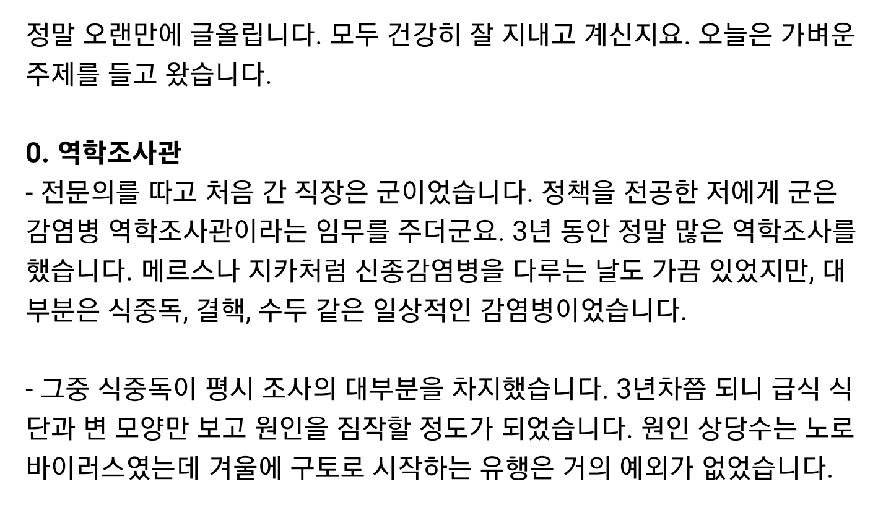
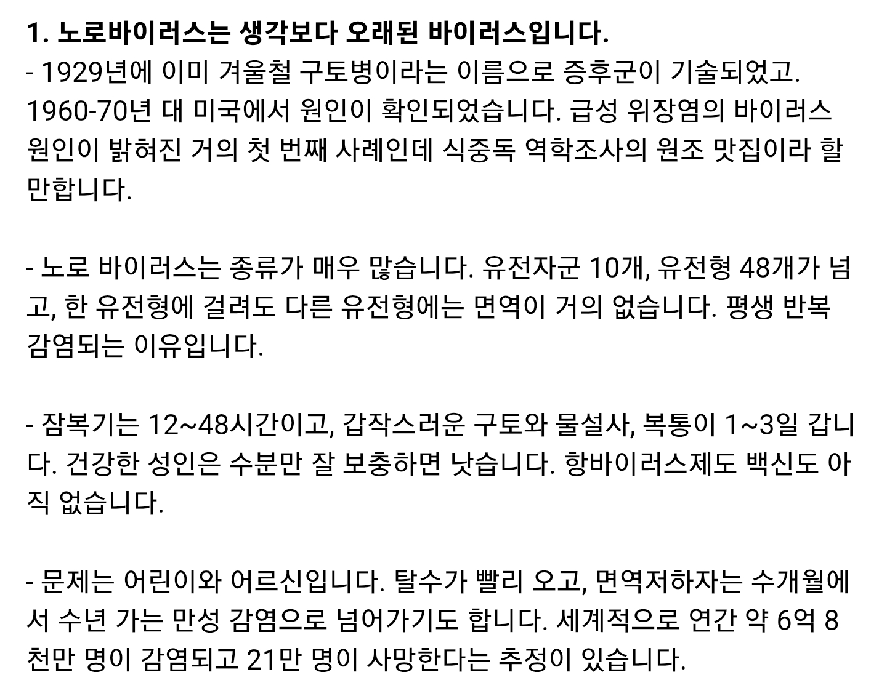
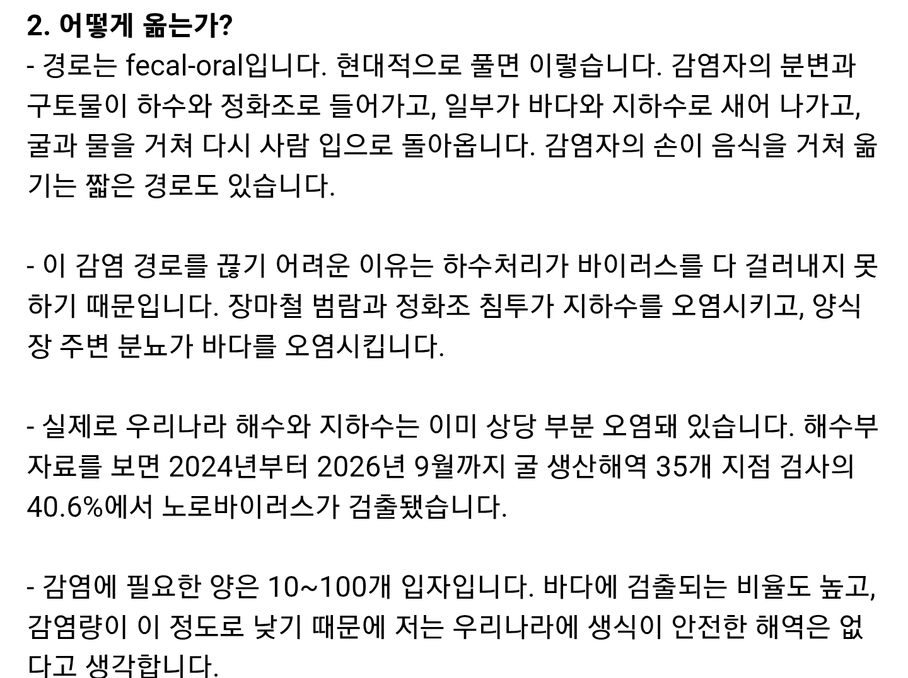
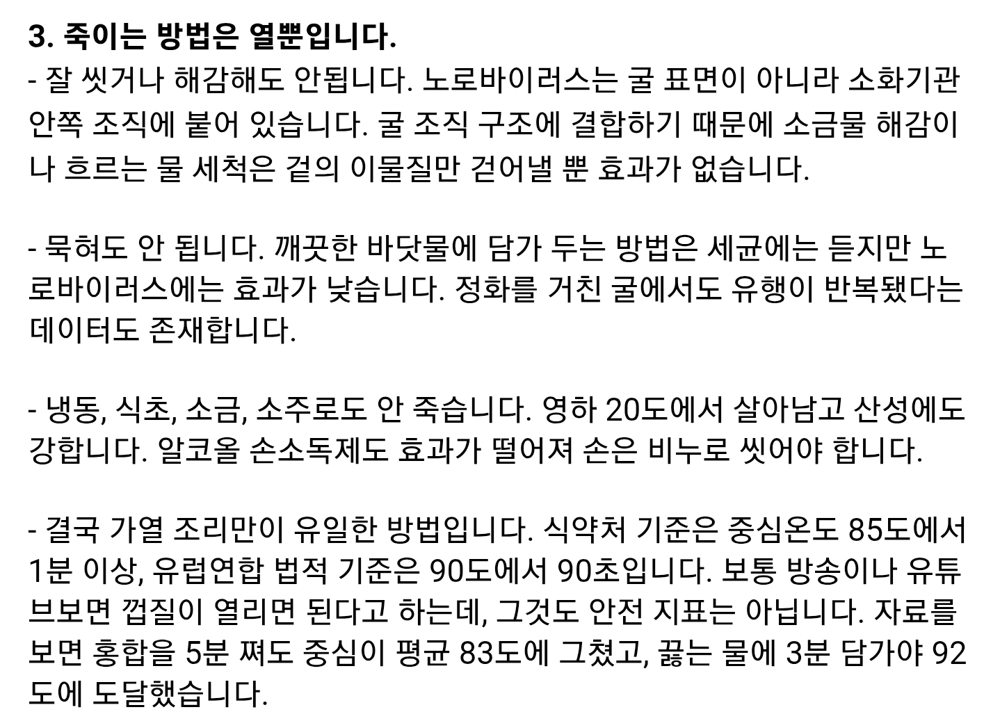
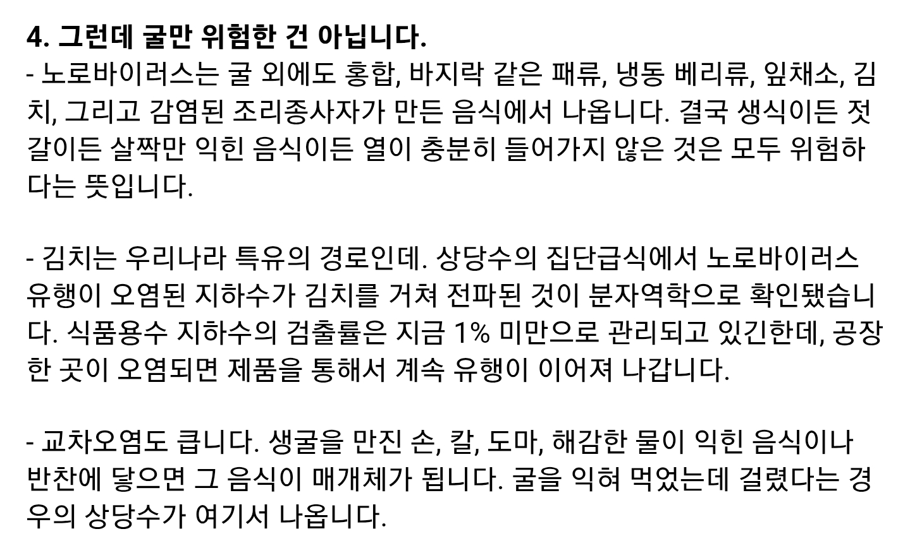
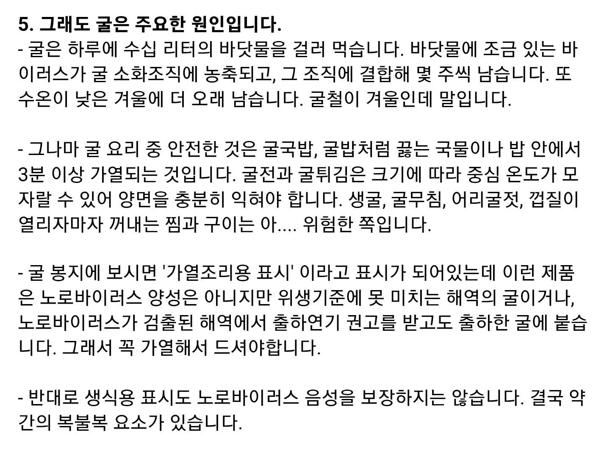
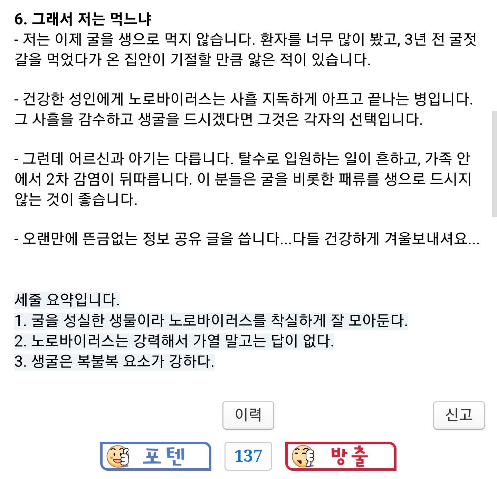
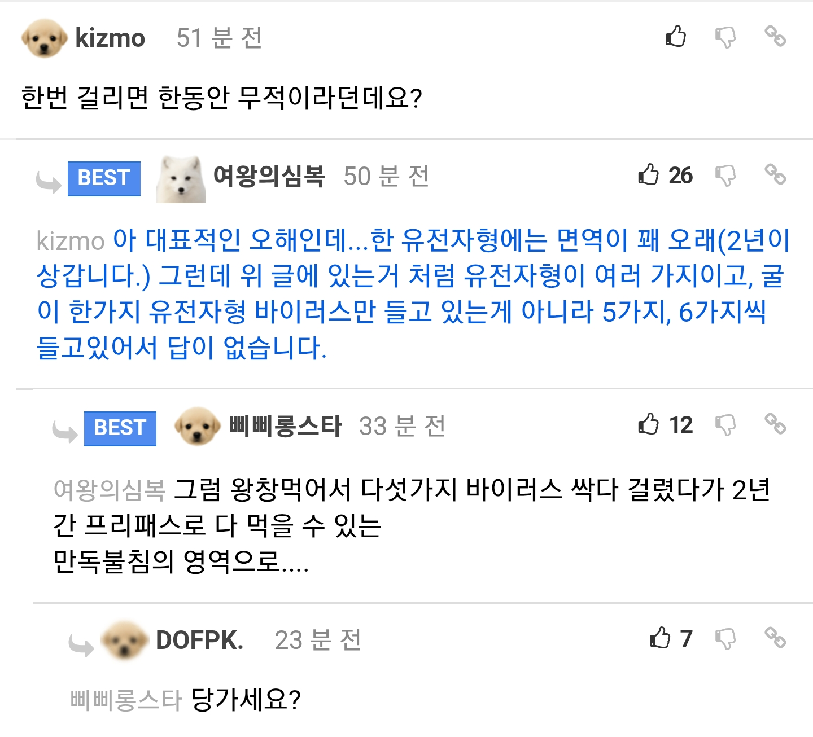
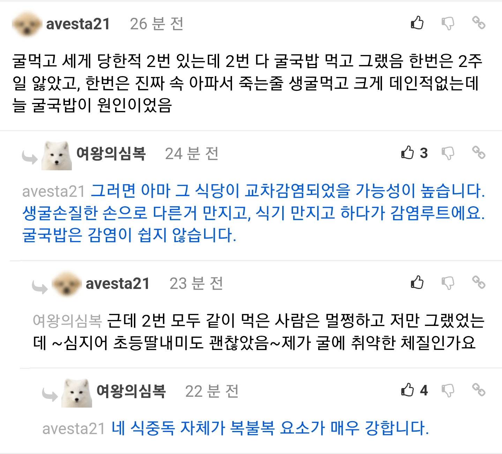

유전자에 따라 노로바이러스 감수성이 달라서
자연면역인 사람도 일정비율 있다더라
이젠 굴감수성도 챙겨야하는 세상인가..
생굴은 걍 안먹는게 답인 듯
그냥 그 고통을 감수할만큼 맛있다고 느끼지는 못함 ㅠ
난 굴에 존나 강한듯
심지어 노지바위에 있는굴도 꼬챙이만 있으면 바로 따먹는데 한번도 아픈적이 없음
근데 설사는 많이함
그게 아픈거야...
너가 진짜 잘하는 노로를 안먹어봐서 그래~
ㅣㅂ융신 ㅋㅋㅋ
내친구중에도 지는 한번도 배아픈적없고 감기걸린적없다 큰 소리치는새끼있는데
가만보니 걍 걸리고도 기억을 못하는거였음
솔직히 굴국밥 굴전 굴튀김 등만해도 맛있어서 생으로 먹는 리스크를 감수할 필요성을 못느낌
글에서 쇠맛 존나나네
당가 굴매니아
동생이랑 같이 굴 보쌈 시켰는데 나만 걸림 시발 그 이후로 안먹음
김장할떄 굴 넣으면 안되겠네
당가세요? ㅋㅋㅋㅋㅋㅋㅋㅋㅋㅋㅋㅋㅋㅋㅋㅋㅋ
저건 현직의사가 아니여도 먹을놈을먹고 안먹을놈은 안먹잖아 ㅋㅋ
나도 굴국밥먹다 급성장염걸린적있었는데
같이 먹은사람은 멀쩡하고...
생굴은 커녕 익힌굴도 왠만하면 안먹음
그러니까 한번 걸리면 회사를 사흘동안 쉴 수 있는 꿀템이라 이말이디?
아까운 연차는 굴이 대신 내주냐?
연차는 다음 해에 다시 채우면 되는 데스웅
그냥 아프지말고 연차를 써 임마
병가가있데스웅
생각해보니까 난 생굴 먹어본적이 없다고 생각했는데 외가에서 생굴김치 보내줘서 꽤나 꾸준하게 먹었구나
그때 먹고 딱히 배아픈적은 없던거같은데
걸리면 일시무적이라고 댓글달려했는데 이미 반박이 되어있네 ㅋㅋㅋㅋㅋ
많이 먹어라ㅋㅋ
식중독 씨게 걸리면 사람이 죽을 수 있구나 생각되더라
수액 맞아도 안 됨?
아예 안먹거나 감안하고 먹거나네 ㅋㅋ


굴국밥으로 걸리는건 ㅅㅂ... 식당자체도 위생이 ㅂㅅ인거네
근데굴김치는못참아
진짜 생굴 석화 이런거 환장하게 좋아했는데 노로 한번 걸리고 며칠 시체처럼 있다보니 이제 쳐다도 안보게됨.....먹으면 예전처럼 맛있고 행복한 기분 당연히 느끼겠지만 그때 겪었던 고통이 무서워서
일단 맛없어서 다행
한번 앓고나니깐 생굴도 굴도 그냥 어폐류 자체를 잘 안먹게됨
당가당가
올해초에 생굴 첨 먹어보고 바로 노로 걸려본 뒤로는
생굴 안먹기로 다짐함 ㅋㅋ
회도 안돼??
굴은 1월달 한철에 먹는것라는 것을 배우고 한번도 노로 바이러스 걸린적이 없는데 운이 좋았나보네
생굴 절대 ㄴㄴ
굴국밥은 먹음
근데 굴국밥집 위생때매 노로걸렷다니 소름이네 ㄷㄷ
석화에 마늘조각올리고 타바스코 살짝 쳐서 먹으면 그자리서 100개는 먹을수 있음
생굴먹고 1주일간 앓아누웠다
매년 겨울 마다 생굴로 러시안룰렛 한다
2~3년에 한 번 걸리는듯
아 피버타임이라고 ㅋㅋ
굴만 먹으면 설사해 시이이이이발
굴을 좋아하지도 않지만 안좋아하는것도 아니라면 철마다 먹긴했는데 아직 안걸려봄 같이 먹었던 사람들도 안걸린거 보면 복이네
마지막으로 석화 먹었을때 단톡방에 사진 올리니까
하도 노로바이러스 거리길래 "아주 병나서 쓰러지라고 저주를 퍼붓네" 라고 생각했는데
다음날 진짜로 노로 걸림...
난 아직까지 노로바이러스 걸린 적 없는데 더 조심해야겠구만
걸리면 계속 쏟아내니까 무제한 생굴흡입 피버타임 가능
노로바이러스 한번 걸리기 전까지만 먹을게...
군대에서 어떤 부자 선임 생일이라고 출장뷔페 불렀다가
굴전먹고 중대원 절반쯤 쓰러졌는데, 나도 굴전 왕창 먹었는데 멀쩡한거 위장이 튼튼한줄 알았는데 그냥 복불복이었구나..